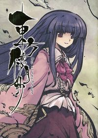

- Welcome to Touhou Wiki!
- Please register to edit. For assistance, check in with our Discord server or IRC channel.
Cage in Lunatic Runagate
| 東方儚月抄 Cage in Lunatic Runagate | |
|---|---|
|
 | |
| Publisher | |
| Released |
December 25, 2009 |
| Writers | |
| Illustrators | |
| Comic artists | |
| Pages |
188 |
| Chapters |
8 |
| Followed by | |
| ISBN | |
Touhou
Touhou Bougetsushou (東方儚月抄) is a loosely interconnected storyline about the Lunarians that includes Silent Sinner in Blue, Cage in Lunatic Runagate, and Inaba of the Moon and Inaba of the Earth. Bougetsushou (儚月抄) can be translated as "Ephemeral Moon Vignette"; compare with the main title of its predecessor 東方永夜抄 ～ Imperishable Night (Touhou Eiyashou), where "永夜抄" translates to "Eternal Night Vignette".
Written by ZUN, with illustrations by TOKIAME. The stories themselves were serialized in the magazine Chara☆Mel.
Contents
- 1 Summary
- 1.1 Chapter 1: The Sage's Recollections
- 1.2 Chapter 2: Gem of 3000 Years
- 1.3 Chapter 3: The Dragon King's Palace in the Pure Land
- 1.4 Chapter 4: The Eternal Flame
- 1.5 Chapter 5: From the Infinitely Low Earth
- 1.6 Chapter 6: The Fool's Sealed Letter
- 1.7 Chapter 7: Half-body Half-loyalty
- 1.8 Chapter 8: Two Kinds of Homesickness
- 2 Translation
- 3 External Links
Summary[edit]
The stand-alone stories in Cage in Lunatic Runagate offer detailed background information to the events in Silent Sinner in Blue, offering the insights and perspectives of various major and minor characters, and of those who didn't appear at all.
Chapter 1: The Sage's Recollections[edit]
The first chapter serves as a prologue of sorts to Silent Sinner in Blue. Eirin Yagokoro reflects on the series of events that had led her, Kaguya Houraisan, and Reisen Udongein Inaba to flee to Earth, as well as proving a few details on the Hourai Elixir. The story ends as they decide to go to the Hakurei Shrine to see Reisen, who had apparently landed there.
Chapter 2: Gem of 3000 Years[edit]
The second chapter is from Kaguya's point of view and offers her perspective on Eientei, as well as the current lives of Eirin and herself, as the events of Silent Sinner in Blue are unfolding.
Chapter 3: The Dragon King's Palace in the Pure Land[edit]
The third chapter is from Watatsuki no Toyohime's perspective. After reflecting on the baseless rumors of an upcoming Earth invasion, the sisters briefly discuss the events 1500 years ago involving Eirin and Kaguya's flight to Earth. It also reveals Eirin as the person behind the old Japanese fable involving the Dragon King's Palace, which is on the moon rather than underwater, and states that the main character of the fable was later deified.
Chapter 4: The Eternal Flame[edit]
The fourth chapter is an account of Fujiwara no Mokou's past, prompted by a discussion with Keine Kamishirasawa and the Youkai Mountain, and details how she came into possession of the Hourai Elixir and became an immortal. Near the end she witnesses the launch of the Scarlet Devil Mansion's rocket.
Chapter 5: From the Infinitely Low Earth[edit]
The fifth chapter consists of a dialogue between Yukari Yakumo and her familiar Ran. They discuss the phases and motion of the moon, as well as the voyage of the Scarlet Devil Mansion's rocket and Yukari's own plans for a "counterattack".
Chapter 6: The Fool's Sealed Letter[edit]
The sixth chapter returns to the Moon from the perspective of Reisen, who bears witness to the battle between Marisa Kirisame and Watatsuki no Yorihime. She reflects on the events that have brought her to this point.
Chapter 7: Half-body Half-loyalty[edit]
The seventh chapter is a retelling of Ran's visit to the Netherworld from Youmu Konpaku's point of view. It then turns to Youmu's efforts to spy on the Scarlet Devil Mansion's construction of the rocket. Finally, she and Yuyuko Saigyouji discuss their own plans to go to the moon.
Chapter 8: Two Kinds of Homesickness[edit]
The eighth and final chapter is essentially an epilogue to Touhou Bougetsushou. The various characters discuss their experiences while having a pool party in the basement of the Scarlet Devil Mansion and getting drunk.
Translation[edit]
Pieces of information about dates are by courtesy of the Japanese Touhou Wiki.
- pg. 1: Cover
- pg. 3: Aphorism - added only on hardcover publication
- pg. 5: Index
- pg. 8: First Chapter: The Sage's Recollections - released 2007-06-25 (Chara☆Mel, Vol. 1)
- pg. 30: Second Chapter: Gem of 3000 Years - released 2007-09-25 (Chara☆Mel, Vol. 2)
- pg. 52: Third Chapter: The Dragon King's Palace in the Pure Land - released 2007-12-25 (Chara☆Mel, Vol. 3)
- pg. 74: Fourth Chapter: The Eternal Flame - released 2008-03-25 (Chara☆Mel, Vol. 4)
- pg. 96: Fifth Chapter: From the Infinitely Low Earth - released 2008-06-25 (Chara☆Mel, Vol. 5)
- pg. 118: Sixth Chapter: The Fool's Sealed Letter - released 2008-09-25 (Chara☆Mel, Vol. 6)
- pg. 138: Seventh Chapter: Half-body Half-loyalty - released 2008-12-25 (Chara☆Mel, Vol. 7)
- pg. 160: Last Chapter: Two Kinds of Homesickness - the former half released 2009-03-25 (Chara☆Mel, Vol. 8), the latter half 2009-06-25 (Chara☆Mel, Vol. 9)
- pg. 188: Afterword
External Links[edit]
- Chara☆Mel at the Wayback Machine (archived March 29, 2011)
- Japanese Touhou Wiki - Cage in Lunatic Runagate
- Official website

Wallpaper from the official site
Wallpaper from the official site
Wallpaper from the official site

From CiLR Webblog
From CiLR Webblog
From CiLR Webblog
From CiLR Webblog
From CiLR Webblog
From CiLR Webblog
From CiLR Webblog
From CiLR Webblog
| ||||||||||||||||||||||||||||